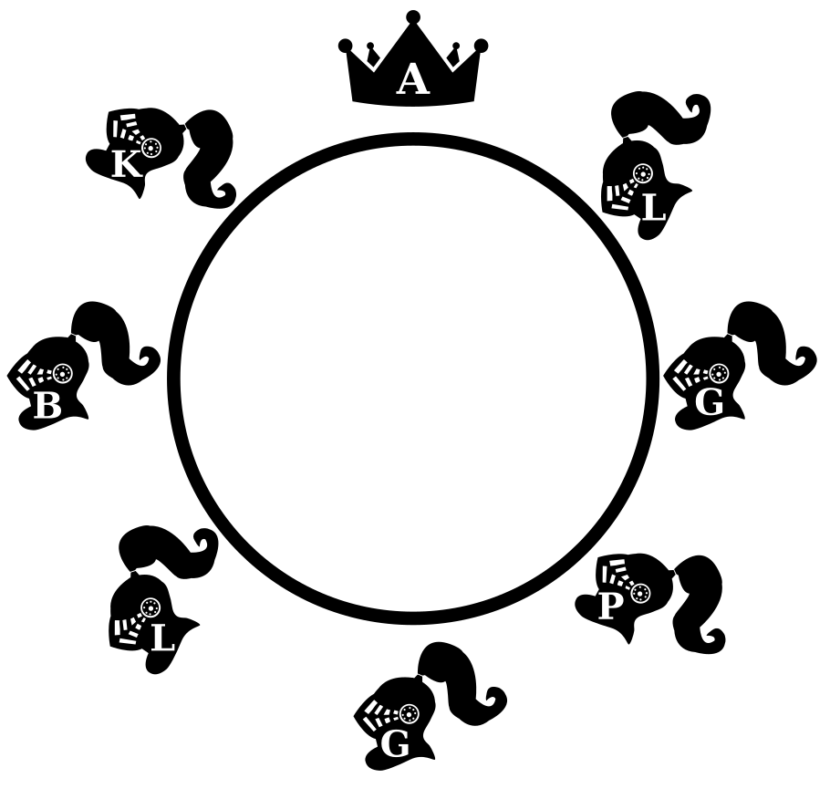

CSCE 121: Introduction to Program Design and Concepts
Lab Exercise Eight
Objective
The purpose of this lab is to practice using pointers.
Some friendly advice
This looks long, but that is mainly because lots of explanation is provided
to help guide you. The main work is in writing
the check_all_guests_symmetric and last_man_seated
functions, all the preceding is to help by giving you some scaffolding functions.
Knights partying like its 999
Types
In this lab we're interested in the knights of King Arthur's court who've come to Camelot as part of a New Year's celebration. We need to represent data to describe the knights; we do this with the following types:
#define STRLEN 200
struct party_goer_t; // Declare the type for a party-goer, to be defined later
typedef struct party_goer_t * party_goer_p; // A pointer to a party-goer
struct party_goer_t { // Now we define the type
char name[STRLEN]; // The name of the person
party_goer_p came_with; // Person who came with this person; NULL if alone.
party_goer_p sitting_to_left; // Person seated to his/her left.
};
The idea is that each person at the party
will be represented by an
instance of this structure. It has data to represent the attendee's details
and also two pointers (of type party_goer_p) that refer to other
attendees. This is how it is intended to work:
- We use the
namefield to store the attendee's name. - People can arrive singly or together as part of a pair. If a person arrives together with someone
else, then the
came_withpointer is set up to point to the other person. If the person came alone, the pointer should beNULL. - Once people arrive, they are seated at a big table.
Their seating arrangement is represented via the
sitting_to_leftpointer. For attendeeguestthe referenceguest.sitting_to_leftrefers to the person seated toguest's left.
Printing and sanity checking
Now we want to use these structures to describe the situation on the 31st of December. Below is a snippet of code that initializes elements in a way that reflects knights seated together at the famous round table, as illustrated in the figure.
|  |
{kind=link}
Here is a function that will return true if your pass it
a reference to a party_goer_t and they are indeed
seated at a round table.
bool at_a_round_table(party_goer_p p)
{
assert(p != NULL);
party_goer_p next = p;
do {
if (next == NULL)
return false;
next = next->sitting_to_left;
} while (next != p);
return true;
}
Test this claim by passing in a reference to one of the 8 individuals
initialized above. Trace through it to observe how it works; notice that
it doesn't matter if you start from &arthur or
&percival, or any of the other knights. Unlike an array, there
is no privileged start for this data structure. (If you're following along with
the Arthurian connection, remember that was actually the point of Camelot having a round
table!)
The next step is to write two functions, one to print the name of an individual, and another that prints the details of whole table given a reference to one person (and assuming that it is a round table).
|
|
The next four lines of C++ code will go further and establish that four of the attendees arrived together. The relationship is shown in the figure with little arrows showing the references.
|  |
A basic maxim in computing is "garbage in, garbage out". This pithy little aphorism sums up the observation that even perfectly correct code may produce bad output if the provided input is malformed. As part of the defensive programming technique we've been honing together in class, we should check that the input makes sense. This is important because with pointers there are many more things that can go wrong.
Complete the following function so that, given party-goers seated around a
round table, it checks if all came_with relationships are indeed
symmetric.
bool check_all_guests_symmetric(party_goer_p p)
{
assert(p != NULL);
...
}
Once you've written your code, you can test it on the cases defined here:
0,
1,
2,
3.
These are just short snippets of C++ code intended for you to copy and paste
into your program. (It is important that you make sure you understand why you
can call check_all_guests_symmetric(test0) like that without
needing an index.) Also, here is an equivalent definition
of the original scenario we had above.
Party game
After much making merry, a fine feast, and rousing chorus fuelled by ample flagons of mead, the bill is to be settled. King Arthur proposes the following game to determine whose purse must provide the coin.
Starting from Arthur and going to his left, they each count down from three. The person who should count "zero" excuses himself from the table. Then, the person who previously said "one" begins again from three. This is repeated until only one person remains. They lose and the bill is theirs to pay. The following figure shows the first two rounds of the procedure.
{kind=link}
The knights are suspicious that something may be amiss; maybe Arthur, that skinflint!, did some careful calculation beforehand. They agree to the system but with a crucial modification: before they begin, Arthur must first roll a fair die to determine what the count should start at. Whatever number was rolled replaces the three in the procedure described above.
Write a function to determine who must foot the bill. It should be
defined like this, where starter should be Arthur and
n the result of the die roll.
party_goer_p last_man_seated(party_goer_p starter, int n)
{
...
}To answer this question, you should:
- The party-goer who is "out" should be removed by updating the appropriate
sitting_to_leftpointer(s). -
Repeat this until only one knight remains. Again this should be
determined solely via
sitting_to_left.
Important: Don't use any arrays in
your function—that will sideline much of the exercise.
A very good solution would work without counting the total number of
people, so that even if there were more people at the
table than an int or a long could store, it
would be correct. (That's a big bill!)
The round table revisited
The statement above about the result computed by the
at_a_round_table() function was very carefully worded. That is
because it can't serve as a function to determine whether any seating
arrangement is at a round table or not. Can you see why?
|
|
What is the challenge in writing an
at_a_round_table() function that does?
|
|
Acknowledgements
The knight in the figures above is based on Hayden Kerrisk's icon, the king is based on Orin Zuu's icon, both are licensed under CCBY.